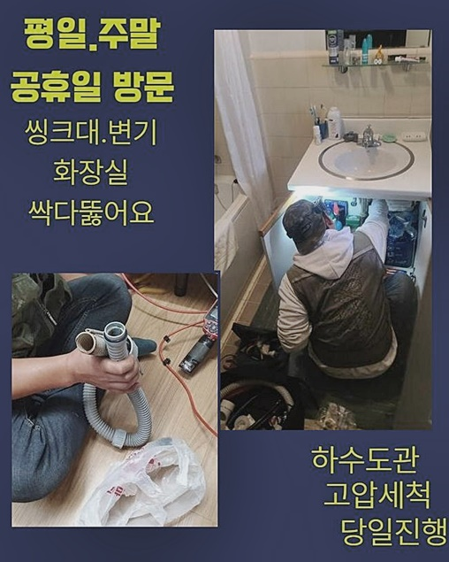
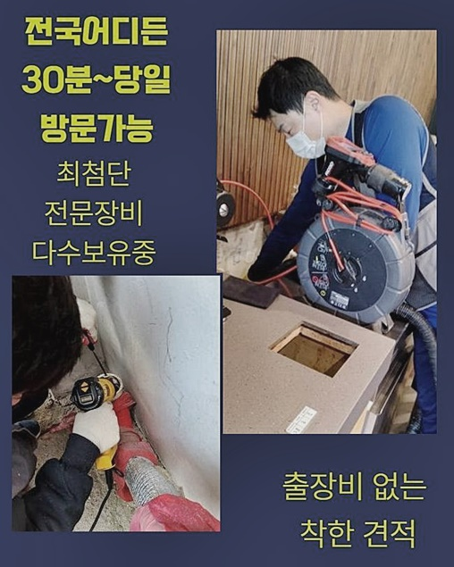
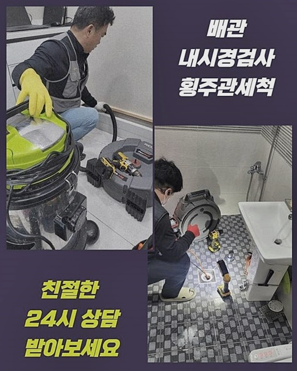
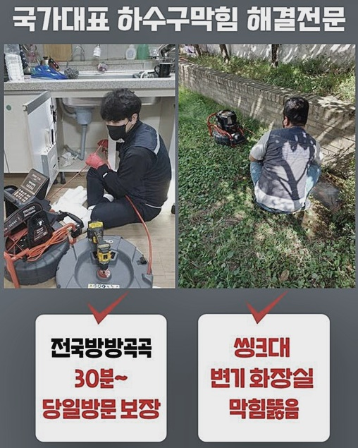
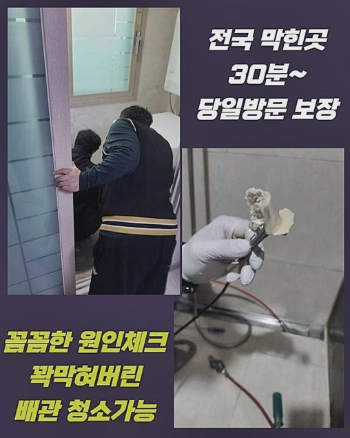
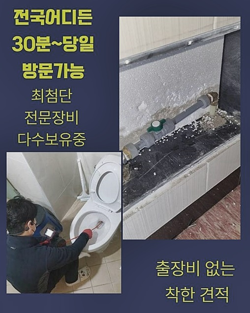
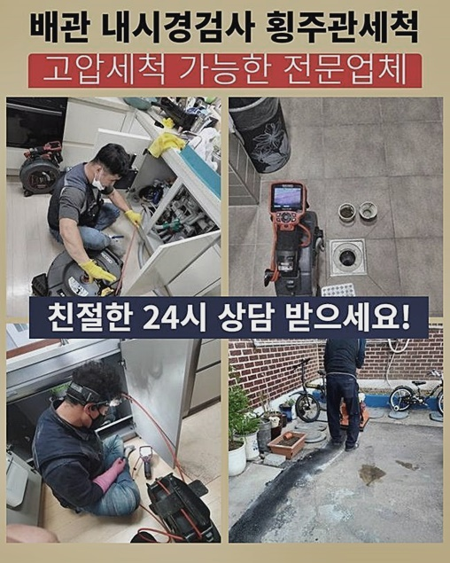

🏠 양주 고읍동하수구막힘 회정동 악취차단 출장설비
양주 싱크대막힘 전문 시공 후기

📋 작업 개요
- 위치: 양주
- 서비스 유형: 싱크대막힘, 하수구막힘, 배관막힘, 뚫는업체, 배관청소, 고압세척, 악취차단
- 작업 일시: 2024. 7. 21. 18:06
- 업체명: 하수구수사대 (010-5615-2118)
🔍 문제 상황
양주 고읍동하수구막힘 회정동 악취차단 출장설비
막힘문제와 연관하여 작업했던내용을 바탕으로 설명드릴테니 자세히 살펴보시면 많은정보를 얻으실수있어요!
근래들어 작업했었던 현장사례로 주방쪽에서 하수구가 막히는증상이 발생한일이 있었어요
씽크대의경우 기름기들이 쌓이게되어 막힘이 발생하게되는데 저희들은 배관속을 꼼꼼히조사해 막힌이유가 뭔지 알아낸뒤 조치를 취해드리고있어요
현장장소를 살펴봤더니 하수관에서 악취문제가 발생하고있었고 물을이용하는것도 어려웠죠
이러한경우 메인하수구에 이물이퇴적되서 배수시스템이 무너진것으로 보였답니다
이러한것들을 신속히 해결하고자 성심성의껏 배관시공을 착수하고있죠
깔끔한 배관청소로 문제가없게끔 만들고있고 고객분의 불편함을 해소해드릴게요
고압청소기는 고압의 물을사용해 이물을 제거시키기에 확실한 하수구세척이 진행될수있어요
이물이축적된 배수관을 깔끔히 청소할때 활용하고있는데 고압세척도구는 하수관청소시 정체현상들을 처리시키는데 효율적이에요
세척과정시 주변환경에 피해받지않게 대형비닐을 사용하여 피해가 가지않게끔 하고있어요
첨단기구들로 배관성능이 문제없도록 만들고 안전히 운행되기까지 기여하고있어요
배수관은 각기다른 지점에 자리잡고있으나 전부 연결되어있기에 막힘증상이 자주발생해요

🔎 원인 분석
💡 전문가 진단: 정밀 진단 장비를 사용하여 슬러지의 고착 여부를 판명하고 타격/세척 작업을 실시했습니다.
하수구입구쪽을 살피니 샤워용품찌꺼기와 머리카락등등 이물들이 퇴적되어있는걸 확인했어요
이러한때는 하수구카메라를 써서 세밀한 검수과정이 필요하겠습니다
공용관의경우 물길자체가 어느정도만 뚫려있는 모습이었지만 공간이부족해 배수상태에 영향이가고있는 것이었죠
대체적으로 점검해봤더니 간단하게 이물을없애는 도구보다는 고압청소장비가 효과를볼수있다고 판단되었어요
의뢰자분께 의견을구한뒤 신속하게 세척을 시작할수있었죠
내시경을이용해 하수관안을 확실하게 살펴볼수있어요
오염물로인해 배수관이 막혀버렸다면 이물을 청소하는 세척작업이 필요하답니다
그렇지만 세척작업은 잘못진행한다면 하수도내부에 기스가생기며 결국에는 심각한경우로 이어질수가있죠
다양한 작업경력을 소유하고있는 전문기사들이 현장을 방문하여 검수과정을 수행하다보니 손상문제로 인한 걱정하실 필요없답니다
석션기계는 오염물을흡입하여 제거해내는 역할을맡고있죠
석션을통해 배관안에있는 오염물들을 제거해내고 이물의형태를 확인할수있죠
샤프트장비는 잔해물들을 배관벽면에서 떼어내고 주로 고착물질들을 분쇄시키는데 이용된답니다
이다음에는 내시경으로 점검해서 안쪽상황이 어떤지 체크하여 적절히 조치할예정이죠

🔧 작업 과정
내시경작업은 막혀버린 이유에있어서 알아내려면 필요한과정이죠
내시경작업을 진행해보니 막혀버린까닭이 이물질로인해 막혀버렸다는것을 살필수가있었죠
내시경노즐끝에 소형카메라가 달려있기때문에 육안으로 파악하기어려운 장소에 활용하고있죠
막힘문제를 보이는위치와 잔해물의 형태가어떤지 명확하게 알아낼수있습니다
배관카메라로 인해서 수립계획을 정하는데있어 도움이됩니다
그래서 막히는일이 발생하였다면 하수구촬영기를 투입하여 정확히 점검하는게 중요하겠습니다
오염물을 없애기위해 스케일링장비를 활용하여 배관내부에있는 오염물들을 처리하고자했죠
다시한번 알려드리지만 샤프트기끝에 달린사슬이 빙빙돌며 내부깊은곳의 고착물질들을 분쇄해준답니다
저희들은 작업계획에있어 사전에 분명히 고지드려 고객분들께서 작업방식의 내용을 이해하시고 신뢰를 하실수있도록 신경을 쓰고있답니다
뚫음작업을 진행할때는 전문지식을 갖추고있지 않다면 되려배관에 크랙을 발생시킬수있으므로 과도하게 셀프조치를 하는것은 삼가주시는게 좋습니다
전문업체를 호출해보시면 하수구걱정은 접어두셔도되고 베테랑들이 작업을진행해 문제가처리되면 2차피해가 일어날일이 없도록 마무리될거에요
두번째장소는 화장실배관이 막힌 현장으로 방문드려봤죠
이번장소도 비슷하게 고착물때문에 문제가생긴 장소였어요
고착물을 분쇄해주는 스케일링도구를 사용해보기로 결정했어요
악취현상도 보였으므로 물길확보를 통해서 작업해보기로했죠
가장효과적인 수리가진행될것을 기대해볼수있었어요
오랜시간 다양한 오물들이 하수관안에 쌓이게되면서 막히게된것을 확인했습니다
재차 강조하지만 전문기술이 없을경우 어떤연유로인하여 막혀버린것인지 알아내기어려워요
그렇기때문에 우리와같은 전문인의 도움이 필요한거랍니다
빠른시일내로 문제를타파해 쾌적한하수구로 제공해드릴게요!
같은문제로 고생하지않도록 예방을하는 방법까지도 취해드릴게요


✅ 작업 완료
고객만족을 가장우선으로 두는 과정으로 진행할테니 염려마세요!
깨끗한 배관으로 만들어드리고자 최선을다할게요
문제를방치하면 또다른피해가 일어날수있사오니 막힘징조가 나타나게되었을때 조치를취하시길 바랍니다
전국어디든지 1시간안으로 도착할수있고 하수구전용 장비들까지 보유하고있으니 밤낮관계없이 연락주세요
이밖에도 궁금한게있으면 편안하게 의뢰주시면 친절히 응대해볼게요!
하수구시스템이 망가졌다면 저희들과함께 헤쳐나가봐요!




⚠️ 주방 싱크대 배관 막힘 예방 수칙
- ✅ 기름기가 묻은 식기나 프라이팬은 설거지 전 키친타올로 반드시 기름때를 닦아내세요.
- ✅ 주기적으로 싱크대 개수대에 뜨거운 물을 가득 받아 한 번에 내려 배관 내부 기름을 씻어내세요.
- ✅ 배수구 거름망을 미세한 필터로 사용하시고 음식물 찌꺼기가 틈으로 새어 들지 않게 관리하세요.
- ✅ 베이킹소다와 식초를 뜨거운 물과 함께 일주일에 한 번씩 부어주면 배관 살균과 막힘 예방에 좋습니다.
💡 핵심 정리
- 확실한 장비 작업(내시경 점검 및 샤프트 스케일링)으로 원인을 뿌리 뽑습니다.
- 작업 후 1년 이내에 동일한 부위 재발 시 100% 무상 A/S 서비스를 보장합니다.
- 서울 · 경기 · 인천 전 지역에 24시간 언제든 긴급 출동할 수 있도록 항시 대기 중입니다.
❓ 자주 묻는 질문 (FAQ)
🚨 양주 싱크대막힘 문제로 고민이신가요?
정확한 원인 진단과 확실한 시공으로 재발 없는 해결을 약속드립니다.
24시간 긴급 출동 | 서울 · 경기 · 인천 전지역 | 1년 내 재발 시 무상 A/S